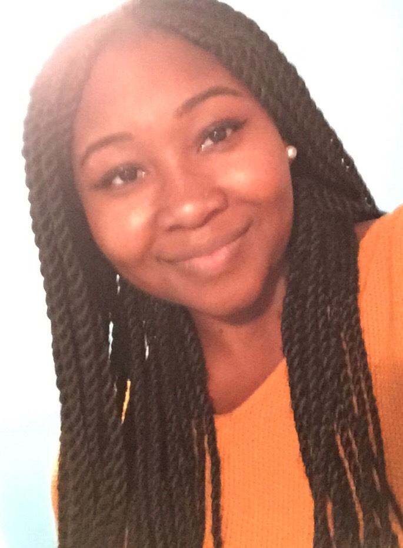

audreyagyemang310@gmail.com
From a foreclosure coordinator to a web developer! This aspiring web developer came from humble
beginnings. Daughter of immigrant parents, I was born in Brooklyn, NY and raised in Levittown, PA. Harry
S Truman was the high school I attended, and Penn State University was the college I went to (Go PSU!)
Working as a foreclosure coordinator for an asset management company was great, and my coworkers are
awesome. However, I knew deep down this isn't where I wanted to go career-wise. The thought of using my
creativity to create websites, thrills and frightens me. But that's the risk I'm willing to take!
With family and relatives that are majority doctors and nurses, it was no surprise how shocked they
were that I had chosen a different career path.
All with good reason! With the support of my family,
my friends, my current work and UPenn LPS Coding Program, I hope to succeed in becoming a web developer!